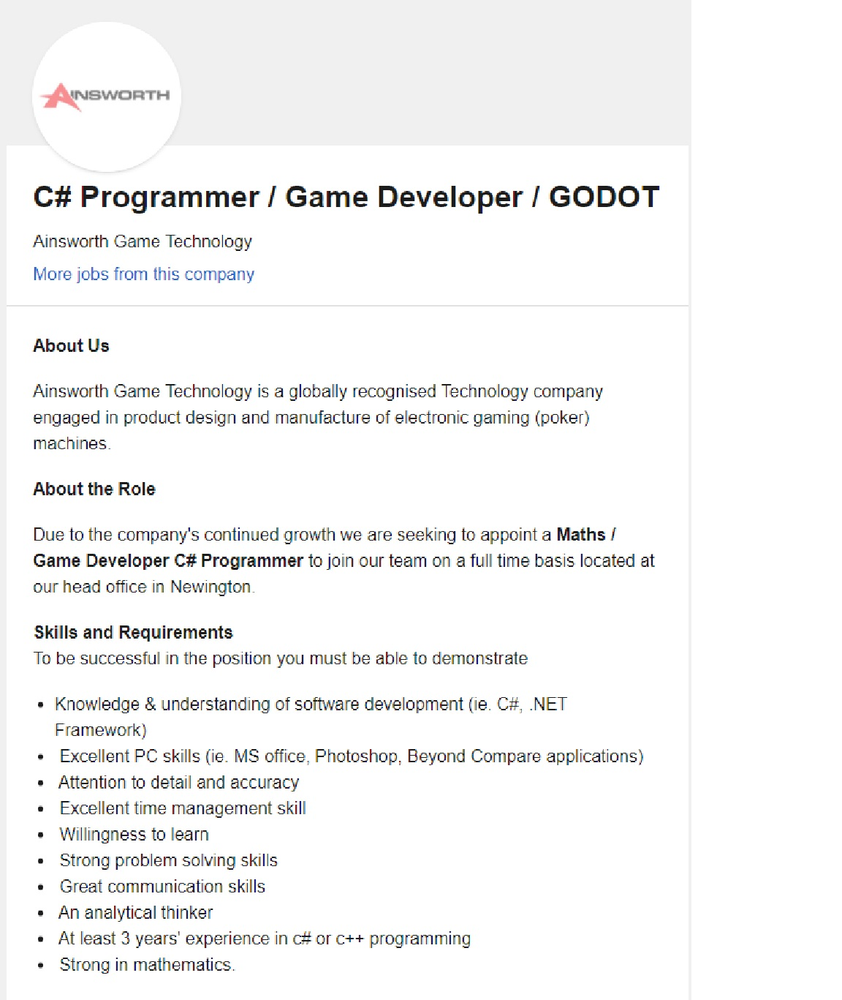

Ideal Job
EJ
While I'd like to work for really popular video game companies such as Square Enix or Atlus, I think it would be best to start locally. Ideally, my dream job would be to become a video game developer and make my ideas come to life. I don’t really know where to start, however. Making video games takes team effort and I want to help map out how a games should work and plan out storyboards. From my research, I think the best course of action I can take is to enter a career in designing UIs first and help create a good interface for gamers to have the optimal experience. For this, I may need to learn how work using Unreal Engine or C# as well as to improve my knowledge over making good UI. Technical skills aside, I feel that I should learn how to interact with people better as I’m still quite shy talking to new people. For now, all I can do is go to my classes and learn. Start small first. Then I can keep going until I reach my goal. Maybe one day, I’ll end up working for one of the companies that made the video games I love.
Long
 Job linkOne of the reasons this is appealing to me is that this job isn't required working experience you just need a strongly based knowledge that I need to build up during the university period. Secondly, I'm confident at my PC skills I have spent a long time getting used to that software that they have mentioned like: MS office, adobe, I also passionate about hardware, computer parts so that might be a strike for me.
First of all, the jobs skills and requirement is really simple its suit for a graduate student looking for a job as junior development, since it doesn't require any working experience, another requirement is also doesn't hard. For knowledge & understanding of software development(ie. C#, .NET framework) as far as I understand this is may relevant to experience in using gaming development platforms that support C# and .NET framework like Unity, MonoGame, CRYENGINE. Then, you need to be hard working a good leaner with decent analytical skills to gain knowledge and experiences from senior/ manager. Strong mathematics is required since you will have to calculate many graphical 2D/3D functions, Algebra and Arithmetic, Vector Math to represented Objects in a game with Vectors, Quaternions represent rotations almost as space-efficiently as Euler angles, without suffering from Gimbal lock, Physics to understand how physics respond in real life then apply it to the game, you can also require Probability in order to balance that game eg Character stats, weapon stats finally is Statistic to construct A.I and application, such as calculate bullet flying time, bullet travel distance, rocket launching and landing or enemy/ ally AI. Communication skill what I can understand is it been required since when you work as an employee in a company you will have to work on a project as a team, for example, a game project will require many different aspects of jobs to make one, you need a design team, coding team, a story team to connect the game, finally, a marketing team is needed in order to sale your product.
Currently, what I have now is just a basic, beginner coding experiences, could be also mathematics and critical thinking. But, I'm confident that those skills can be gain during university not just by myself but from university courses, developer clubs. Later on, I will try to get an internship to gain real-world experience as much as possible. Finally,I am hoping that I can learn more is teamwork and leadership.
Jerin
At the moment, I think my ideal job would be as a game programmer for Paradox Interactive. The job involves developing features and systems for Paradox games as well as keeping them up to date. I find the job appealing since the company is one of the few in the games industry that focuses on making historical, grand strategy video games which is a genre i'm quite passionate about so I would like to be apart of developing those types of games in the future. Plus the company is based in Stockholm and Sweden seems like a great country to live in.
I currently have next to no technical experience or qualifications required for the job. Although i have played a number of their titles and dabbled in modding some of them which i think is a good starting point and shows i have passion for video games.
I plan on obtaining the necessary skills by first working jobs as a junior programmer or software developer to gain experience working in teams as well as to gain experience in C++ since 3 years professional experience is required.
Simon
My ideal job would be to become a game and digital artist, as it would allow me to explore different pathways. The job will allow me to express my creativity and support with my fellow workmates, helping to create new and exciting games. Part of the job is to create new assets, in-game objects that the player can interact with. Also, illustrating games art while understanding the concepts can allow me as an artist to make a more immersive environment that the players can explore. It appeals to me because part of the job is to turn a concept into a finished, polished game. By creating new experiences for the player, we can all share new exciting moments, and that motivates me to show what I’ve learned.
Team Discusstion
What common elements are there, if any?
All of our career paths are generally part of the gaming industry. We all require creativity and familiarity over the type of games that we seek to create and are all learning specific programming apps that will help us build a game.
What differentiates each position from the others, if anything?
While our ideal jobs all fall under the gaming industry, the roles we wish to play in a team of game developers are part of different teams that work on different aspects of a video game.
How similar or different are your career plans across the group?
Our career plans are very similar. While we’re all not after the same department, we are learning how to use utilize what we’re taught as well as to learn more specific programs to help us build a portfolio and enter a team or video game company.